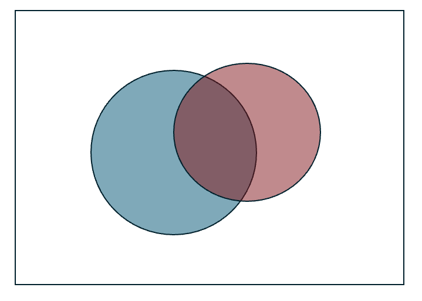
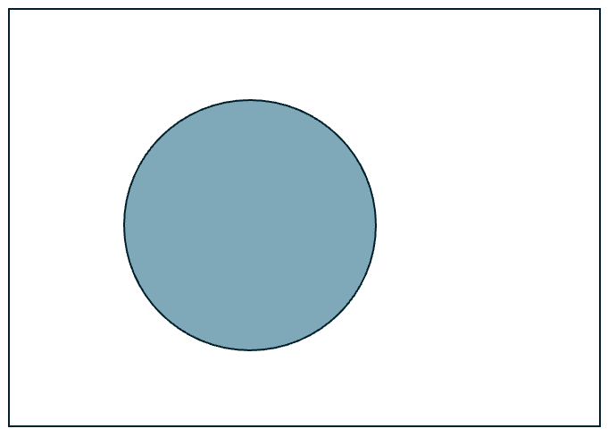
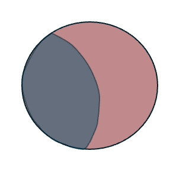
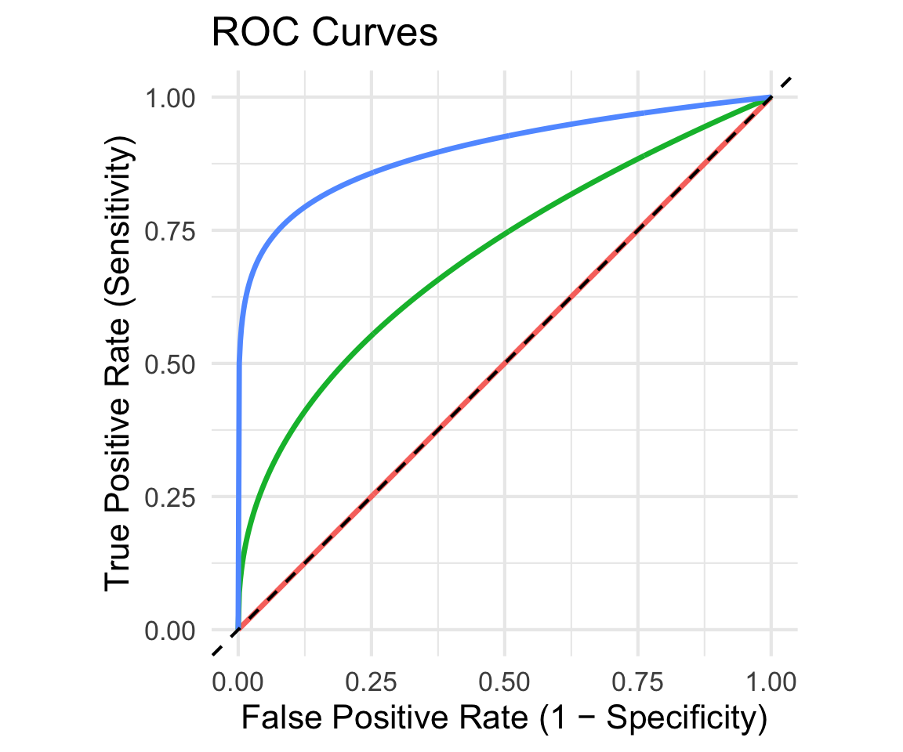

Lecture 4: Conditional Probability Continued and Diagnostic Testing
BIOS 600 - Summer Session II 2026
Announcements
Lab 1 posted, will be the focus of lab tomorrow!
Not due until next Monday, Jun 29 at 11:59 pm
Please take advantage of office hours
Reading
Pagano and Gavreau: Section 6.4
OpenIntro Statistics: No corresponding section
Overview
Sensitivity, specificity
ROC Curves
Conditional Probability Review
Conditional probability is the probability an event will occur when another event has already occurred.
Often, knowing information about what has already happened can change the probability of some other event.
Conditional Probability Visualization
We can think of the white rectangle as our sample space, and each circle as an event.
Let \(A\) = the larger, blue circle and \(B\) = the smaller, red circle.

Probability of \(A\)
If we’re interested in \(P(A)\), this is the information we have:

Probability of \(A\vert B\)
But if we know that Event \(B\) occurred, our sample space “shrinks” down to the red circle:

Conditional probabilities
Suppose we care about the probability that someone has HIV, denoted by \(P(HIV+)\).
- What if they have a positive HIV test?
\(P(HIV + | Test +)\)
- What if they have a negative HIV test?
\(P(HIV + | Test -)\)
Knowing the result of the HIV test changes our estimate of their HIV proability.
Question
Which of the three probabilities would we expect to be the highest? The lowest?
Medical diagnostics
Suppose we’re interested in the performance of a diagnostic test. Let \(A\) be the event that someone has a condition of interest, and let \(B\) be the event that a test for that condition is positive.
Prevalence: \(P(A)\)
Sensitivity: \(P(B|A)\), or the true positive rate
- probability that the test is positive given the condition is present
Specificity: \(P(B^C | A^C)\), or 1 minus the false positive rate
- Probability that the test is negative given the condition is not present
Medical diagnostics (continued)
Positive Predictive Value (PPV): \(P(A|B)\)
- probability that the condition is present, given a positive test
Negative Predictive Value (NPV): \(P(A^C | B^C)\)
- probability that the condition is not present, given a negative test
Example
- Suppose there is an illness affecting Biostatistics students, and we have access to the “true” illness status and the test result for all students.
| Has Illness | No Illness | Total | |
|---|---|---|---|
| Positive Test | 54 | 60 | 114 |
| Negative Test | 6 | 180 | 186 |
| Total | 60 | 240 | 300 |
Question
What is the prevalence of this illness in the population of Biostatistics students?
What is the sensitivity of the test?
What is the positive predictive value of the test?
Example
- Suppose there is an illness affecting Biostatistics students, and we have access to the “true” illness status and the test result for all students.
| Has Illness | No Illness | Total | |
|---|---|---|---|
| Positive Test | 54 | 60 | 114 |
| Negative Test | 6 | 180 | 186 |
| Total | 60 | 240 | 300 |
Question
What is the specificity of the test?
What is the negative predictive value of the test?
Popularization of medical diagnostics
During COVID-19, diagnostic testing has become mainstream.
![A two-by-two table with the top of the table labelled The Truth, with columns for people without COVID-19 and for people with COVID-19. The left side of the table is labelled The Test, with the top row for positive test and the bottom row for negative test. The top-left square has a red figure with the words false positive; the top-right square has a green figure with the words true positive; the bottom-left has a blue figure with the words true negative; and the bottom-right has a black figure with the words false negative.](images/lec-5/covid.jpg)
Testing for COVID-19 is not perfect. It may come back positive in some people who are not infected with SARS-CoV-2 and negative in some people who are.
Diagnostic tests are developed with both sensitivity and specificity in mind.
Sensitivity and specificity
The greater the sensitivity, the less likely it will miss real cases.
- Recall: sensitivity is the probability of a positive test, given the condition is present.
The greater the specificity, the more likely uninfected individuals will be correctly deemed negative.
- Recall: Specificity is the probability of a negative test, given the condition is not present.
A test’s performance can be surprisingly counterintuitive
Consider a scenario with COVID-19 testing in an asymptomatic or mild population with 1 in 51 people infected.
Assume the test is always positive in individuals with the disease (i.e., 100% sensitivity) but falsely positive 10% of the time (i.e., 90% specificity).
As shown in the figure (next slide), the chance that someone with a positive test result is actually infected is under 20% (1 in 6)
Illustration
![A diagram split down the middle by a dotted line.The legend specifies that a green figure indicates positive test and has COVID-19, a red figure indicates positive test but does not have COVID-19, and a blue figure indicates negative test and does not have COVID-19. On the left is labeled people without COVID-19, with 5 red figures and 45 blue figures. On the right is labeled people with COVID-19, with 1 green figure. Below the dotted line is an arrow pointing to five red figures and one green figure, with the sentence 1 in 6 people with a positive test has COVID-19.](images/lec-5/pos_test.jpg)
Takeaway
What’s the takeaway here?
Even if a test never misses true cases (perfect sensitivity), a modest false positive rate can mess up the results, especially when the disease is rare.
- Consequence: Most people who test positive may not actually be infected.
This demonstrates why specificity and disease prevalence are important as well in diagnostic testing.
Rapid self-administered HIV tests
From the FDA package insert for the OraQuick ADVANCE Rapid HIV-1/2 Antibody test,
Sensitivity, \(P(Test+|HIV+)\): 99.3%
Specificity, \(P(Test - | HIV -)\): 99.8%
From CDC statistics for 2016, 14.3/100,000 Americans aged \(\geq\) 13 are HIV+.
Rapid self-administered HIV tests
Suppose a randomly selected American aged \(\geq\) 13 has a positive test on this test. What do you think is the probability they are HIV+?
Let \(A\) be the event of being HIV+ and \(B\) be the event of testing positive
Here, we want to find \(P(A \vert B)\).
From the definition of conditional probability, we know \(P(A \vert B) = \frac{P(A \cap B)}{P(B)}\).
But we don’t know \(P(A \cap B)\) or \(P(B)\) – we only know \(P(A)\), \(P(B \vert A)\), and \(P(B^C\vert A^C)\).
We need a few more tools to find these unknown values.
Bayes’ Rule
We can use Bayes’ rule to “reverse” the order of conditioning.
By definition:
\[P(A | B) = \frac{P(A \cap B)}{P(B)} = \frac{P(B | A) P(A)}{P(B)}\]
Now our numerator is written in terms of known probabilities – the sensitivity and the prevalence!
For the denominator, we need one last tool.
The Law of Total Probability
We know that a person either has HIV (\(A\)) or does not have HIV (\(A^C\)).
\(A\) and \(A^C\) are disjoint, and also partition the sample space – every member of the population falls into one of these two groups
Then the law of total probability states that the probability of event \(B\) is
\[ P(B) = P(B \cap A) + P(B \cap A^C) \]
- Of course, we still don’t know \(P(B \cap A)\) or \(P(B \cap A^C)\), but we can use the definition of conditional probability to write:
\[ P(B) = P(B \vert A)P(A) + P(B \vert A^C)P(A^C) \] - Now we know all of these probabilities (since \(P(A^C) = 1 - P(A)\))!
Rapid self-administered HIV tests
Putting it all together, we have
\[\begin{align} P(B \vert A) &= \frac{P(B\vert A)P(A)}{P(B\vert A)P(A)+P(B\vert A^C)P(A^C)}\\ &= \frac{(.993)(.000143)}{(.993)(.000143) + (1-.998)(1-.000143)}\\ &= 0.066 = 6.6\% \end{align}\]
Is this result surprising? Why?
Interpretation of Result: Oraquick test
This calculation is surprising. We would hope that the PPV would be higher.
What is going on?
Before we answer that: what if a randomly selected adult in Botswana tested positive (HIV prevalence \(\approx\) 25%)?
To calculate this, we can use our same setup as above, but just swap out a new value for prevalence, \(P(HIV +)\).
PPV for Botswana
\[P(HIV + | Test +)\]
\[=\frac{(.993)(.25)}{(.993)(.25) + (1-.998)(1-.25)}\]
\[ = .99 = 99\%\]
What’s going on here?
The PPV is only 6.6% for US while it’s 99% in Botswana.
US has low prevalence of HIV while Botswana has relatively higher prevalence.
There will likely be a higher number of false positives relative to true positives in the place with low prevalence, causing the positive predictive value (PPV) to drop.
- This is simply due to the nature of the test, i.e. having some nonzero false positive rate, in our case .002.
This is something to look out for! Specificity (i.e. FPR) is important to consider.
Takeaway
In the US, small prevalence + modest false positive rate is causing the PPV to be much lower than we’d want.
In Botswana, higher prevalence “corrects” this issue, leading to PPV being much higher (meaning more people who test positive actually have the condition.)
With a modest false positive rate, a higher prevalence can help our PPV be higher, yielding a more useful diagnostic test for that setting. With lower prevalence, you need to be careful with the conclusions made by a diagnostic test as it could be misleading.
Steps to solve using Bayes’ Rule
Define two events of interest as \(A\) and \(B\).
Identify what probabilities you already know.
Write the probability of interest in terms of Bayes’ Rule.
Expand denominator in terms of law of total probability.
Plug in probabilities from step 2 and solve.
Practice calculating NPV with Bayes’ Rule
Researchers are interested in accurately predicting the development of irreversible brain damage or death (a “bad outcome”) due to brain hemorrhage based on clinical characteristics during the acute phase of the hemorrhage. One diagnostic tool is NDKA, a biomarker for brain damage, with patients classified as being “high” level or “low” level. The specificity and sensitivity of using high NDKA as a diagnostic for bad outcomes at one year are 90% and 20%, respectively. The prevalence of bad outcome is 40%.
What is the negative predictive value (NPV) of “high NDKA” as a diagnostic for bad outcomes?
Step 1. Define the events of interest
Step 1. Define the events of interest
Let \(A\) be having a bad outcome and \(B\) be a high NKDA level.
This means that \(A^C\) is having a good outcome and \(B^C\) is a low NKDA level.
We want to find \(P(A^C|B^C)\).
Step 2. Identify what probabilities you already know
Step 2. Identify what probabilities you already know
\(P(B \vert A) = 0.9\) … therefore \(P(B^C \vert A) = 1 - 0.9 = 0.1\)
\(P(B^C \vert A^C) = 0.1\)
\(P(A) = 0.4\) … therefore \(P(A^C) = 1 - 0.4 = 0.6\)
Step 3. Bayes’ Rule
Step 3. Bayes’ Rule
\[ \begin{aligned} P(A^C \vert B^C) &= \frac{P(A^C \cap B^C)}{P(B^C)}\\ &= \frac{P(B^C \vert A^C)P(A^C)}{P(B^C)} \end{aligned} \]
Step 4. Law of Total Probability
Step 4. Law of Total Probability
\[ \begin{aligned} P(A^C \vert B^C) &= \frac{P(B^C \vert A^C)P(A^C)}{P(B^C)}\\ &= \frac{P(B^C \vert A^C)P(A^C)}{P(B^C \vert A^C)P(A^C)+P(B^C\vert A)P(A)}\\ \end{aligned} \]
5. Plug in known probabilities
5. Plug in known probabilities
\[ \begin{aligned} P(A^C \vert B^C) &= \frac{P(B^C \vert A^C)P(A^C)}{P(B^C \vert A^C)P(A^C)+P(B^C\vert A)P(A)}\\ &= \frac{0.1 \times 0.6}{0.1 \times 0.6 + 0.1 \times 0.4}\\ &= 0.6 = 60\% \end{aligned} \]
Discrimination thresholds
Returning to our example, oral HIV tests give positive or negative results depending on levels of HIV antibodies detected in saliva.
If antibody levels are above a certain threshold, it is classified as a positive test.
Varying the threshold for a positive vs. negative test will result in a test with different characteristics.
At each threshold value, there is a tradeoff between sensitivity and specificity.
Example
- American Heart Assocation has CVD risk calculator PREVENT calculator that provides estimates of probabilities of having a CVD event within the next 10-years
- BP guidelines recommend using this calculator to identify individuals at increased risk of CVD and to guide initiation of antihypertensive therapy
- Current guidance: Individuals at 10-year risk of total CVD ≥ 7.5% are recommended to initiate anti-hypertensive therapy
Example
- Current guidance: 10-Year Risk ≥ 7.5%
- Some people with 2% risk will have an event (false negative)
- Some with 20% risk don’t have an event (false positive)
- Lower Threshold: 10-Year Risk ≥ 2% - Classifies more people at elevated risk of CVD
- More likely to correctly classify individual with an event (higher sensitivity)
- Less likely to correctly classify individuals without an event (lower specificity)
- Higher Threshold: 10-Year Risk ≥ 80% - Classifies less people at elevated risk of CVD
- Less likely to correctly classify individual with an event (lower sensitivity)
- More likely to correctly classify individuals without an event (higher specificity)
ROC curves
Receiver Operating Characteristic curves show how specificity and sensitivity change as the discrimination threshold changes.
- The ROC curve was first developed by electrical and radar engineers during World War II for detecting enemy objects in battlefields, starting in 1941.

Haenssle et. al (2018)
 {fig-alt= “Article from Annals of Oncology with the title Man against machine: diagnostic performance of a deep learning convolutional neural network for dermoscopic melanoma recognition in comparison to 58 dermatologists.”}
{fig-alt= “Article from Annals of Oncology with the title Man against machine: diagnostic performance of a deep learning convolutional neural network for dermoscopic melanoma recognition in comparison to 58 dermatologists.”}
- Machine learning algorithm outperformed doctors in many cases!
From Haenssle et al. (2018)

ROC curves show, for each false positive rate, what the true positive rate is corresponding to that threshold value.
Example ROC Curves

Why ROC Curves?
By moving the threshold, we can:
Catch more true cases (↑ sensitivity),
But risk more false alarms (↑ false positive rate).
The ROC curve shows all possible tradeoffs at once.
The diagonal line = random guessing.
A “good” test’s ROC curve bows toward the upper-left corner (high sensitivity, low false positives).
ROC curves help us evaluate how well a test separates groups across all possible thresholds.
Recap
How conditional probabilities relate to sensitivity, specificity, & more!
Thresholds & how they affect diagnostic tests
ROC Curves: show tradeoff between sensitivity and specificity
Next class
- Discrete distributions
Participation
How is class going?
Answer the 1-question survey on Canvas by tomorrow at 11:59pm. Your feedback is extremely helpful!